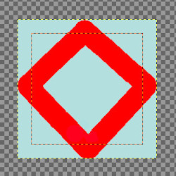

This page lets you customize the default appearance of image windows, for normal mode and for fullscreen mode.
All settings in this section can be overridden by the commands in the View menu.
The preferences dialog can be accessed from the main menu, through → .
The only parts that may need further explanation are the ones related to padding. “Padding” is the color shown around the edges of the image. You can choose among four colors for the padding color: to use the color specified by the current theme; to use the light or dark colors specified for checks, such as represent transparent parts of the image; or to use a custom color, which can be set using the color button for “Custom padding color”.
Keep canvas padding in "Show All" mode: in this mode (Section 5.3, “Show All”), you can see pixels outside the canvas. When this option is not checked, the area outside the canvas is filled with a checkerboard pattern, even if you have selected a custom padding color. When the option is checked, the canvas has the custom padding color.
Figure 15.122. Example

Padding color is yellow. “Keep canvas padding” is not checked.

Padding color is yellow. “Keep canvas padding” is checked.